E1 vs E2 Mechanism: One Jump or Stop-and-Go?
Two ways an alkyl halide loses HX to give an alkene: in one step (E2) or in two steps through a carbocation (E1). Beyond NCERT; important for JEE. In this lesson: E2 with a strong base, rate = k[RX][base], one step with H and X anti; E1 with a weak base in a protic solvent, rate = k[RX], two steps through a carbocation; energy profiles, comparison, rearrangement, Saytzeff, and two solved questions on tert-butyl bromide.
Download the short notesPDF, 176 KB · e2: bimolecular elimination, e1: unimolecular elimination, comparison, solved questions Download the memory cards
PDF, 433 KB · 5 cards: the whole topic at a glance, for quick revision Download the CBSE worksheet
PDF, 207 KB · 10 questions in the CBSE pattern, write your answers on the sheet; answer key at the endDownload the JEE Main DPP
PDF, 219 KB · 10 MCQs: JEE Main PYQs + practice, answer key and solutions Up next in this chapter
 Elimination vs Substitution: Alcohol or Alkene?An alkyl halide with a β-hydrogen can be attacked at carbon (substitution) or lose HX (elimination). The conditions decide which wins. In this lesson: OH- as a nucleophile or as a base, aqueous vs alcoholic KOH, 1° vs 3° halides, the size of the base (tert-butoxide), temperature, and two solved questions: bromoethane + aqueous KOH and 2-bromo-2-methylpropane + alcoholic KOH.Chemistry
Elimination vs Substitution: Alcohol or Alkene?An alkyl halide with a β-hydrogen can be attacked at carbon (substitution) or lose HX (elimination). The conditions decide which wins. In this lesson: OH- as a nucleophile or as a base, aqueous vs alcoholic KOH, 1° vs 3° halides, the size of the base (tert-butoxide), temperature, and two solved questions: bromoethane + aqueous KOH and 2-bromo-2-methylpropane + alcoholic KOH.Chemistry
Key points
- E2: β-H, C=C and X⁻: all at once. H and X must be anti (180°).
- E1: Step 1 slow: X⁻ leaves, R⁺ forms. Step 2 fast: weak base takes β-H⁺.
- When?: E1 competes with SN1. E1 can rearrange (carbocation).
- Both: Energy: E2 one hump, E1 two. E1 valley = the carbocation.
E2: bimolecular elimination
- Conditions: a strong base at high concentration (alcoholic KOH, RO⁻).
- Rate: rate = k[RX][base], second order.
- Mechanism (one step): the base removes a β-H; the C–H electron pair forms the C=C π bond; the C–X bond breaks and X⁻ leaves, all together. No intermediate.
- Geometry: H and X are anti (anti-periplanar, 180° apart).
E1: unimolecular elimination
- Conditions: 3° (or stable) halides, a weak base, a polar protic solvent, heat (e.g. warming in ethanol).
- Rate: rate = k[RX], first order.
- Step 1 (slow, rate-determining): C–X breaks: carbocation + X⁻.
- Step 2 (fast): a weak base (solvent) removes H⁺ from a β-carbon; the C–H pair forms C=C.
E1 competes with SN1 (same carbocation); since it goes through a carbocation, rearrangement is possible.
Comparison
| E2 | E1 | |
|---|---|---|
| Steps | one | two |
| Rate law | k[RX][base] | k[RX] |
| Base | strong | weak |
| Intermediate | none | carbocation |
| Rearrangement | no | possible |
| Energy profile | one hump | two humps, carbocation in the valley |
| Major alkene | usually the more substituted (Saytzeff) |
- ✗ E1 is second order (it is first order; the base is not in the slow step).
- ✗ In E2, H and X can be on the same side (they must be anti).
Solved questions
Q1. tert-Butyl bromide + concentrated alcoholic KOH, heat: strong base at high concentration → E2, giving (CH₃)₂C=CH₂ (2-methylpropene).
Q2. tert-Butyl bromide warmed in ethanol only: weak base, protic solvent, 3° → E1 (2-methylpropene) with SN1 (tert-butyl ethyl ether).
Memory cards
Swipe through the 5 cards to revise this topic in a minute.
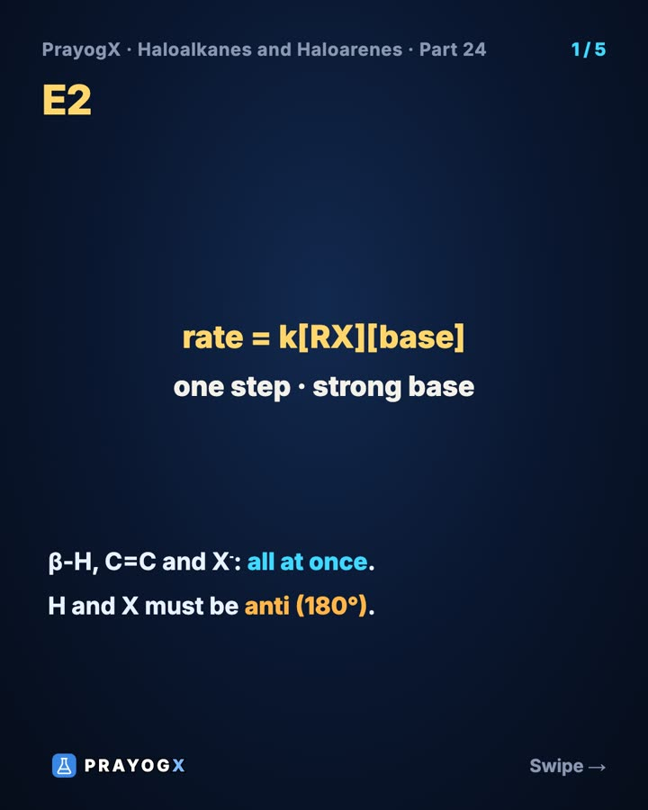
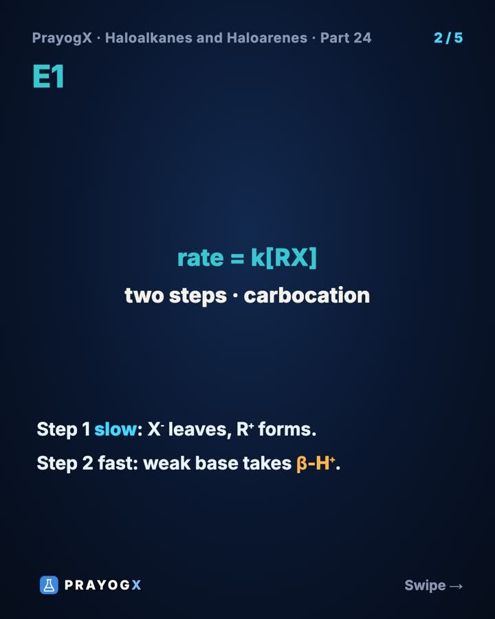
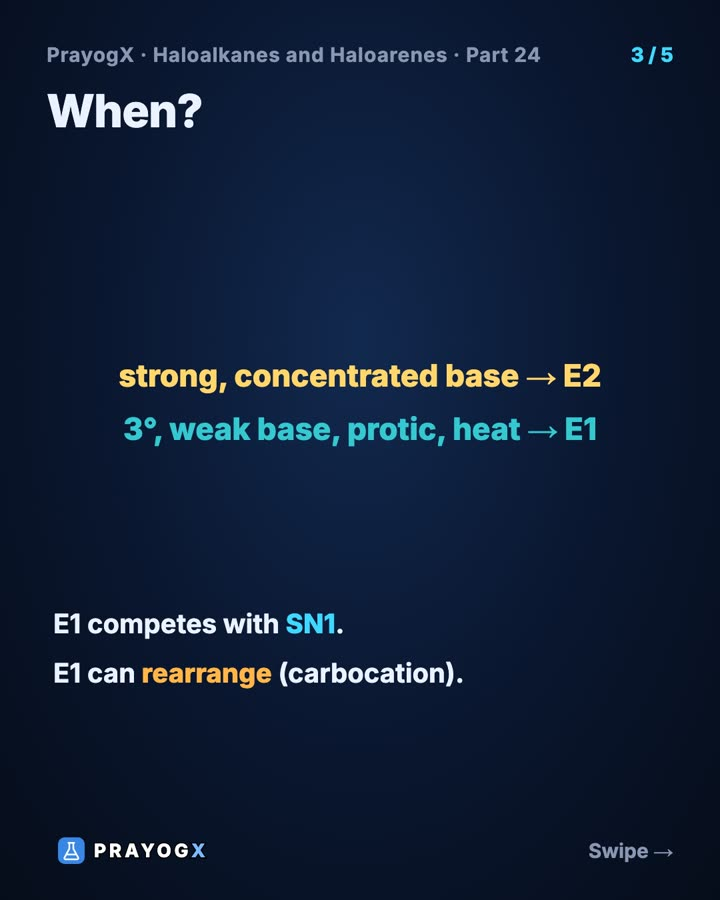
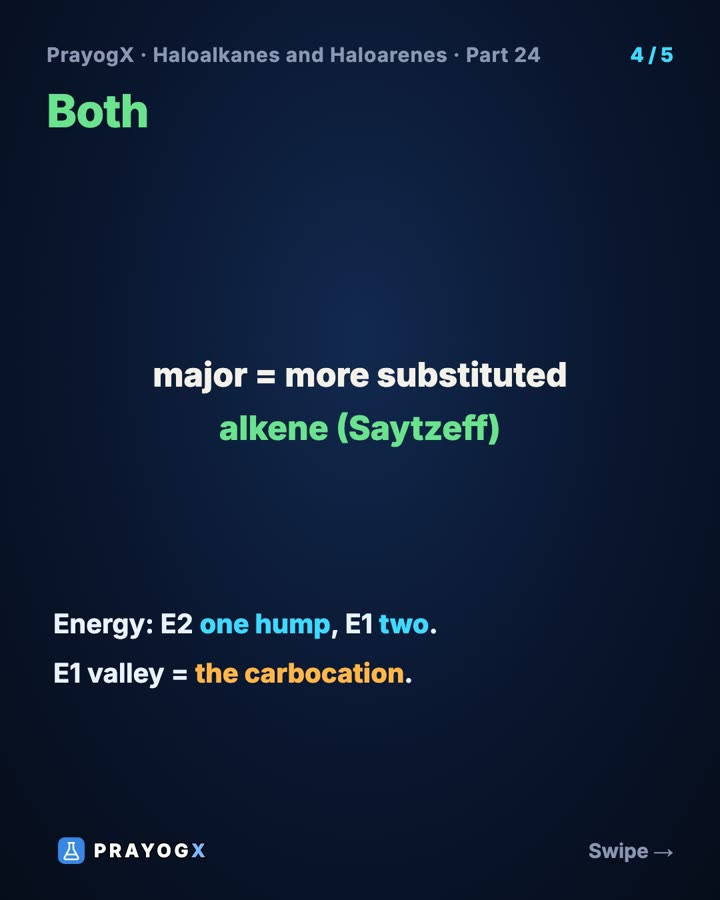
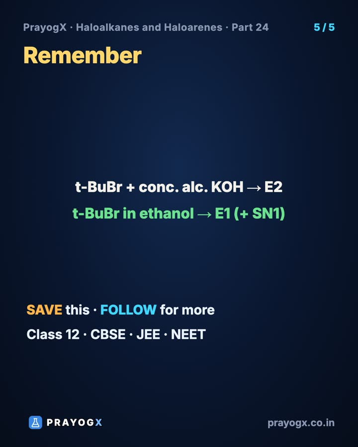
PDF, 433 KB · 5 cards: the whole topic at a glance, for quick revision
More from Haloalkanes and Haloarenes
 β-Elimination and Saytzeff Rule: Which Alkene Wins?Heating an alkyl halide with alcoholic KOH removes the halogen and a hydrogen from the next carbon: an alkene forms. In this lesson: alcoholic KOH and heat, dehydrohalogenation of bromoethane, α- and β-carbons, the bond changes with curved arrows (base takes the β-H, C=C forms, Br- leaves), 2-bromopentane giving pent-2-ene (81 %) and pent-1-ene (19 %), the Saytzeff rule, and two solved questions.Chemistry
β-Elimination and Saytzeff Rule: Which Alkene Wins?Heating an alkyl halide with alcoholic KOH removes the halogen and a hydrogen from the next carbon: an alkene forms. In this lesson: alcoholic KOH and heat, dehydrohalogenation of bromoethane, α- and β-carbons, the bond changes with curved arrows (base takes the β-H, C=C forms, Br- leaves), 2-bromopentane giving pent-2-ene (81 %) and pent-1-ene (19 %), the Saytzeff rule, and two solved questions.Chemistry One Atom, Many Lives: Haloalkanes and HaloarenesIn 1847 James Simpson found that chloroform, CHCl₃, could put people to sleep for surgery. Replace a hydrogen of a hydrocarbon with a halogen and you get a haloalkane (halogen on an sp³ alkyl carbon) or a haloarene (halogen on an sp² ring carbon). They are everywhere: chloramphenicol for typhoid, thyroxine with four iodine atoms, chloroquine for malaria, halothane for anaesthesia. The polar C–X bond, with a δ+ carbon, is why they react, and it opens the whole chapter.Chemistry · 9:16 + 16:9
One Atom, Many Lives: Haloalkanes and HaloarenesIn 1847 James Simpson found that chloroform, CHCl₃, could put people to sleep for surgery. Replace a hydrogen of a hydrocarbon with a halogen and you get a haloalkane (halogen on an sp³ alkyl carbon) or a haloarene (halogen on an sp² ring carbon). They are everywhere: chloramphenicol for typhoid, thyroxine with four iodine atoms, chloroquine for malaria, halothane for anaesthesia. The polar C–X bond, with a δ+ carbon, is why they react, and it opens the whole chapter.Chemistry · 9:16 + 16:9 Count the Halogens: Mono, Di, Poly, Gem and VicHalogen compounds are classified first by the number of halogen atoms: one is mono, two is di, three or more is poly (tri-, tetra-). Count the halogens, not the carbons: chloroform, CHCl₃, has one carbon but three chlorines, so it is a polyhalogen compound. Dihalides split by position: both halogens on the same carbon is a gem-dihalide (alkylidene halide, e.g. ethylidene chloride, 1,1-dichloroethane); on adjacent carbons a vic-dihalide (alkylene dihalide, e.g. ethylene dichloride, 1,2-dichloroethane).Chemistry
Count the Halogens: Mono, Di, Poly, Gem and VicHalogen compounds are classified first by the number of halogen atoms: one is mono, two is di, three or more is poly (tri-, tetra-). Count the halogens, not the carbons: chloroform, CHCl₃, has one carbon but three chlorines, so it is a polyhalogen compound. Dihalides split by position: both halogens on the same carbon is a gem-dihalide (alkylidene halide, e.g. ethylidene chloride, 1,1-dichloroethane); on adjacent carbons a vic-dihalide (alkylene dihalide, e.g. ethylene dichloride, 1,2-dichloroethane).Chemistry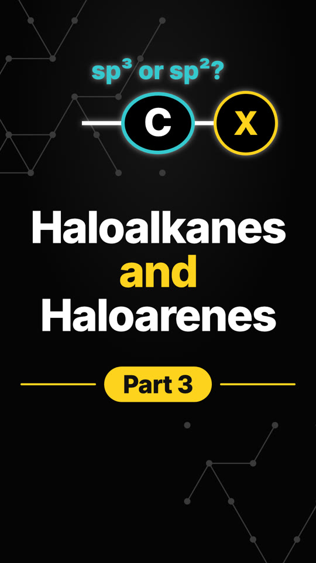
Alkyl, Vinyl, Allyl and Aryl Halides: Which Carbon Holds X?Alkyl, vinyl (vinylic), allyl (allylic) and aryl halides differ only in the carbon that holds the halogen. Alkyl: a saturated sp³ carbon (1°, 2°, 3° by the alkyl groups on it). Vinyl: X directly on a carbon of a C=C (sp²). Allyl: X on the sp³ carbon next to a C=C. Aryl: X directly on a carbon of an aromatic ring (sp²), e.g. chlorobenzene. Bonus: X on the sp³ CH₂ next to a benzene ring is a benzyl (benzylic) halide. Identify the carbon attached to X: that's the key.Chemistry Naming Haloalkanes and Haloarenes: Common and IUPAC NamesEvery halide has two correct names. The common name is the alkyl group + halide (isopropyl chloride, ethyl chloride). The IUPAC name writes the halogen as a prefix (fluoro, chloro, bromo, iodo) on the longest chain, numbered from the end that gives the lowest locants; when both ends tie, alphabetical order decides (2-bromo-3-methylbutane). On benzene one halogen keeps the same name (chlorobenzene); two use o-, m-, p- in common names and 1,2 / 1,3 / 1,4 in IUPAC.Chemistry
Naming Haloalkanes and Haloarenes: Common and IUPAC NamesEvery halide has two correct names. The common name is the alkyl group + halide (isopropyl chloride, ethyl chloride). The IUPAC name writes the halogen as a prefix (fluoro, chloro, bromo, iodo) on the longest chain, numbered from the end that gives the lowest locants; when both ends tie, alphabetical order decides (2-bromo-3-methylbutane). On benzene one halogen keeps the same name (chlorobenzene); two use o-, m-, p- in common names and 1,2 / 1,3 / 1,4 in IUPAC.Chemistry The Polar C–X Bond: Polarity, Bond Length and StrengthThe C–X bond is polar: the halogen pulls the shared pair, so carbon is δ+ and the halogen δ−, and nucleophiles attack that carbon. From F to I the halogen gets bigger, so the C–X bond gets longer (139 → 214 pm) and weaker (452 → 234 kJ mol⁻¹). That is why R–I reacts fastest and R–F slowest, even though fluorine is the most electronegative halogen; and why CH₃Cl, not CH₃F, has the largest dipole moment (μ = q × d).Chemistry
The Polar C–X Bond: Polarity, Bond Length and StrengthThe C–X bond is polar: the halogen pulls the shared pair, so carbon is δ+ and the halogen δ−, and nucleophiles attack that carbon. From F to I the halogen gets bigger, so the C–X bond gets longer (139 → 214 pm) and weaker (452 → 234 kJ mol⁻¹). That is why R–I reacts fastest and R–F slowest, even though fluorine is the most electronegative halogen; and why CH₃Cl, not CH₃F, has the largest dipole moment (μ = q × d).Chemistry Haloalkanes from Alcohols: HX, PCl₃, PCl₅ and SOCl₂One rule: R–OH → R–X, the OH group is replaced by a halogen; only the reagent and its by-products change. HX gives water (anhydrous ZnCl₂ for 1° and 2° alcohols; reactivity 3° > 2° > 1°), PCl₃ gives H₃PO₃ (1 PCl₃ : 3 R–OH), PCl₅ gives POCl₃ + HCl, and SOCl₂ gives SO₂ + HCl, two gases that escape, so the alkyl chloride is pure. Phenol does not react this way: its C–O bond has partial double-bond character.Chemistry
Haloalkanes from Alcohols: HX, PCl₃, PCl₅ and SOCl₂One rule: R–OH → R–X, the OH group is replaced by a halogen; only the reagent and its by-products change. HX gives water (anhydrous ZnCl₂ for 1° and 2° alcohols; reactivity 3° > 2° > 1°), PCl₃ gives H₃PO₃ (1 PCl₃ : 3 R–OH), PCl₅ gives POCl₃ + HCl, and SOCl₂ gives SO₂ + HCl, two gases that escape, so the alkyl chloride is pure. Phenol does not react this way: its C–O bond has partial double-bond character.Chemistry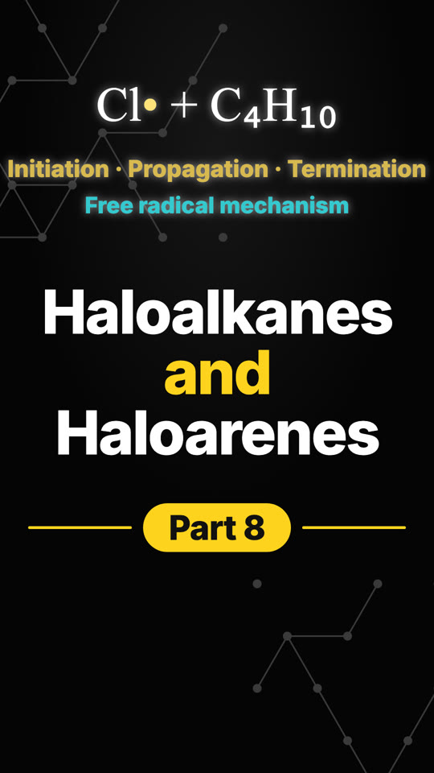
Free Radical Mechanism: Halogenation of AlkanesButane + Cl₂ in UV light gives 1-chlorobutane and 2-chlorobutane, because butane has primary and secondary hydrogens. The free-radical chain has three stages: initiation (Cl₂ splits homolytically into 2 Cl•), propagation (Cl• abstracts an H to give HCl and a butyl radical, which takes Cl from Cl₂ and releases a new Cl•) and termination (two radicals combine). The yield of any one product is low: isomers and polychloro products form a mixture that is hard to separate.Chemistry Markovnikov's Rule: Addition of HX to AlkenesPropene + HI gives 2-iodopropane (major) and 1-iodopropane (minor). In step 1 the π electrons of C=C move to the H of HI, forming a C–H bond on the CH₂ carbon, while the H–I pair goes to iodine (I⁻); the + is left on the middle carbon, a secondary carbocation. A 2° carbocation is more stable than a 1° one, so that pathway is favoured, and I⁻ then bonds to it. Markovnikov's rule: H goes to the double-bond carbon with more H atoms, the halogen to the one with fewer.Chemistry
Markovnikov's Rule: Addition of HX to AlkenesPropene + HI gives 2-iodopropane (major) and 1-iodopropane (minor). In step 1 the π electrons of C=C move to the H of HI, forming a C–H bond on the CH₂ carbon, while the H–I pair goes to iodine (I⁻); the + is left on the middle carbon, a secondary carbocation. A 2° carbocation is more stable than a 1° one, so that pathway is favoured, and I⁻ then bonds to it. Markovnikov's rule: H goes to the double-bond carbon with more H atoms, the halogen to the one with fewer.Chemistry Addition of Halogens to Alkenes: the Bromine TestEthene + Br₂ in CCl₄ gives BrCH₂–CH₂Br: the π bond breaks and one Br adds to each double-bond carbon, giving a vic-dibromide. The reddish-brown colour of bromine disappears, so the reaction is the lab test for unsaturation. Propene gives 1,2-dibromopropane and cyclohexene gives 1,2-dibromocyclohexane. Benzene fails the test: adding Br₂ would destroy its aromatic stability, so the colour stays.Chemistry
Addition of Halogens to Alkenes: the Bromine TestEthene + Br₂ in CCl₄ gives BrCH₂–CH₂Br: the π bond breaks and one Br adds to each double-bond carbon, giving a vic-dibromide. The reddish-brown colour of bromine disappears, so the reaction is the lab test for unsaturation. Propene gives 1,2-dibromopropane and cyclohexene gives 1,2-dibromocyclohexane. Benzene fails the test: adding Br₂ would destroy its aromatic stability, so the colour stays.Chemistry NCERT Example 6.3: Monochloro Structural Isomers of 2-MethylbutaneFree radical monochlorination of (CH₃)₂CHCH₂CH₃ (2-methylbutane) gives 4 monochloro structural isomers, not 5: the two CH₃ groups on the CH carbon are equivalent, so the molecule has only 4 kinds of hydrogen. Replacing one H of each kind gives 1-chloro-3-methylbutane, 2-chloro-3-methylbutane, 2-chloro-2-methylbutane and 1-chloro-2-methylbutane. Counting stereoisomers (JEE), the total is 6.Chemistry
NCERT Example 6.3: Monochloro Structural Isomers of 2-MethylbutaneFree radical monochlorination of (CH₃)₂CHCH₂CH₃ (2-methylbutane) gives 4 monochloro structural isomers, not 5: the two CH₃ groups on the CH carbon are equivalent, so the molecule has only 4 kinds of hydrogen. Replacing one H of each kind gives 1-chloro-3-methylbutane, 2-chloro-3-methylbutane, 2-chloro-2-methylbutane and 1-chloro-2-methylbutane. Counting stereoisomers (JEE), the total is 6.Chemistry Halogen Exchange: Finkelstein and Swarts ReactionsHalogen exchange (NCERT 6.4.3) swaps the Cl or Br of an alkyl halide for another halogen. Finkelstein: R–X + NaI in dry acetone gives R–I; NaCl / NaBr is insoluble in dry acetone and precipitates, so by Le Chatelier's principle the reaction goes forward. Swarts: heating R–Cl / R–Br with a heavy metallic fluoride (AgF, Hg₂F₂, CoF₂ or SbF₃) gives the alkyl fluoride. Trick: Finkelstein → iodide, Swarts → fluoride.Chemistry
Halogen Exchange: Finkelstein and Swarts ReactionsHalogen exchange (NCERT 6.4.3) swaps the Cl or Br of an alkyl halide for another halogen. Finkelstein: R–X + NaI in dry acetone gives R–I; NaCl / NaBr is insoluble in dry acetone and precipitates, so by Le Chatelier's principle the reaction goes forward. Swarts: heating R–Cl / R–Br with a heavy metallic fluoride (AgF, Hg₂F₂, CoF₂ or SbF₃) gives the alkyl fluoride. Trick: Finkelstein → iodide, Swarts → fluoride.Chemistry Haloarenes by Electrophilic Substitution: Reaction and MechanismAryl chlorides and bromides are made by electrophilic substitution: C₆H₆ + Br₂ → C₆H₅Br + HBr with FeBr₃ (or Fe) in the dark, and Cl₂ / FeCl₃ gives chlorobenzene. FeBr₃ (a Lewis acid) turns Br₂ into the electrophile Br⁺; Br⁺ attacks the ring to form the arenium ion (σ-complex), whose + charge is spread over the ortho and para carbons; loss of H⁺ restores aromaticity and regenerates the catalyst. Iodination needs an oxidising agent (HNO₃ / HIO₄); fluorine is too reactive.Chemistry
Haloarenes by Electrophilic Substitution: Reaction and MechanismAryl chlorides and bromides are made by electrophilic substitution: C₆H₆ + Br₂ → C₆H₅Br + HBr with FeBr₃ (or Fe) in the dark, and Cl₂ / FeCl₃ gives chlorobenzene. FeBr₃ (a Lewis acid) turns Br₂ into the electrophile Br⁺; Br⁺ attacks the ring to form the arenium ion (σ-complex), whose + charge is spread over the ortho and para carbons; loss of H⁺ restores aromaticity and regenerates the catalyst. Iodination needs an oxidising agent (HNO₃ / HIO₄); fluorine is too reactive.Chemistry Sandmeyer Reaction: Diazonium Salt to Haloarene, MechanismAn aromatic amine is first turned into a diazonium salt; the diazonium group is then replaced by Cl, Br or I. The halogen goes exactly where the NH₂ group was. In this lesson: aniline is diazotised with NaNO2 and HCl at 273–278 K; the diazonium group is then replaced by Cl (Cu2Cl2/HCl), Br (Cu2Br2/HBr) or I (KI, no copper). Mechanism step by step: Cu+ gives one electron (fishhook arrow), N2 leaves to give the aryl radical, and the radical takes Cl from CuCl2, regenerating Cu+. Key points and two solved questions.Chemistry
Sandmeyer Reaction: Diazonium Salt to Haloarene, MechanismAn aromatic amine is first turned into a diazonium salt; the diazonium group is then replaced by Cl, Br or I. The halogen goes exactly where the NH₂ group was. In this lesson: aniline is diazotised with NaNO2 and HCl at 273–278 K; the diazonium group is then replaced by Cl (Cu2Cl2/HCl), Br (Cu2Br2/HBr) or I (KI, no copper). Mechanism step by step: Cu+ gives one electron (fishhook arrow), N2 leaves to give the aryl radical, and the radical takes Cl from CuCl2, regenerating Cu+. Key points and two solved questions.Chemistry Predict the Product: Haloalkane Preparation Questions SolvedThree questions solve almost every "predict the product" problem: (1) what is the reagent? (2) which bond breaks? (3) where does the halogen go? In this lesson: identify the reagent, the bond that breaks, and where the halogen goes. Reagent toolkit, three traps (SOCl2, the peroxide effect, toluene light vs dark) and four questions solved on the board: SOCl2 on propan-1-ol, HBr on propene with and without peroxide, the Finkelstein reaction, and toluene + Cl2 in the dark vs sunlight.Chemistry
Predict the Product: Haloalkane Preparation Questions SolvedThree questions solve almost every "predict the product" problem: (1) what is the reagent? (2) which bond breaks? (3) where does the halogen go? In this lesson: identify the reagent, the bond that breaks, and where the halogen goes. Reagent toolkit, three traps (SOCl2, the peroxide effect, toluene light vs dark) and four questions solved on the board: SOCl2 on propan-1-ol, HBr on propene with and without peroxide, the Finkelstein reaction, and toluene + Cl2 in the dark vs sunlight.Chemistry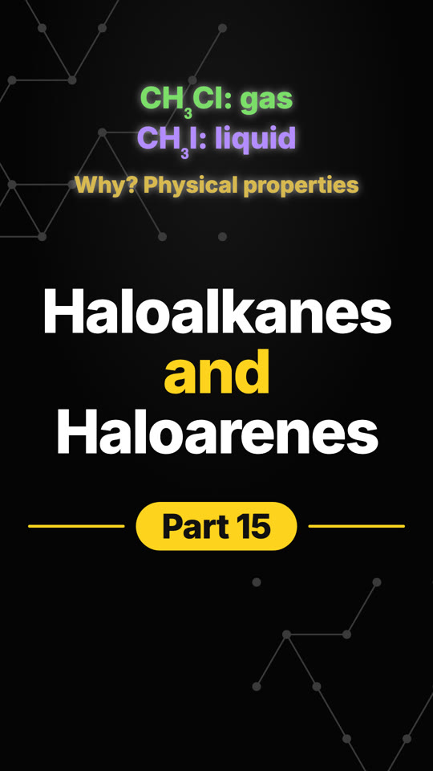
Why Is CH3Cl a Gas but CH3I a Liquid? Physical Properties of HaloalkanesEvery trend follows from two things: the polar C–X bond (dipole–dipole attraction) and molecular size / mass (van der Waals forces). In this lesson: why boiling points are higher than the parent alkanes (dipole–dipole and van der Waals forces), R–I ＞ R–Br ＞ R–Cl ＞ R–F against the room-temperature line, branching lowers the boiling point, para-dichlorobenzene melts highest, density and why haloalkanes barely dissolve in water. Two ordering questions solved.Chemistry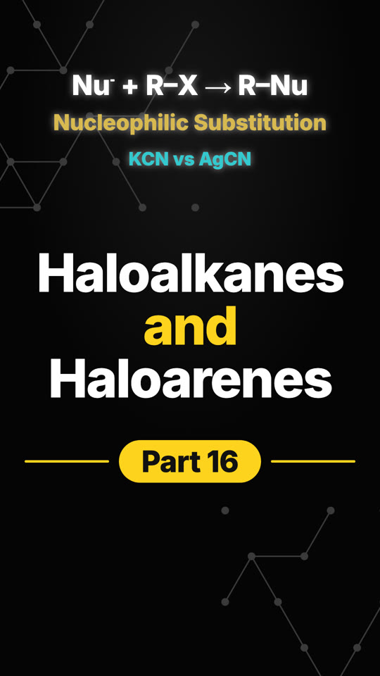
Nucleophilic Substitution Explained: KCN vs AgCN, Ambident NucleophilesA nucleophile (an electron-rich species) replaces the halogen of a haloalkane: Nu⁻ + R–X → R–Nu + X⁻. In this lesson: why the δ+ carbon is attacked, the leaving group, the general mechanism with two curved arrows, SN2 vs SN1 named, the nucleophile decides the product (alcohol, ether, amine, nitrile, ester), and ambident nucleophiles: KCN vs AgCN, KNO2 vs AgNO2. Two questions solved, including a JEE Main 2024 PYQ.Chemistry SN2 Mechanism: Backside Attack and Walden InversionSN2 = Substitution, Nucleophilic, bimolecular: one step in which the nucleophile enters from the back as the halide leaves. In this lesson: rate = k[CH3Cl][OH-] (second order), backside attack at 180°, one step through the transition state with partial bonds and three H in one plane, Walden inversion (like an umbrella turning inside out), reactivity CH3X ＞ 1° ＞ 2° ＞ 3°, and two solved questions including (R)-2-bromobutane → (S)-butan-2-ol.Chemistry
SN2 Mechanism: Backside Attack and Walden InversionSN2 = Substitution, Nucleophilic, bimolecular: one step in which the nucleophile enters from the back as the halide leaves. In this lesson: rate = k[CH3Cl][OH-] (second order), backside attack at 180°, one step through the transition state with partial bonds and three H in one plane, Walden inversion (like an umbrella turning inside out), reactivity CH3X ＞ 1° ＞ 2° ＞ 3°, and two solved questions including (R)-2-bromobutane → (S)-butan-2-ol.Chemistry SN1 Mechanism: Carbocation and Two StepsSN1 = Substitution, Nucleophilic, unimolecular: the halide first leaves on its own to give a carbocation, which the nucleophile then captures. In this lesson: rate = k[(CH3)3CBr] (first order), why doubling the nucleophile does not change the rate, step 1 (slow): the C–Br bond breaks and a planar carbocation with an empty p orbital forms, step 2 (fast): OH- attacks from above or below, carbocation stability 3° ＞ 2° ＞ 1° ＞ CH3+ (+I effect and hyperconjugation), allylic and benzylic halides (resonance), and two solved questions.Chemistry
SN1 Mechanism: Carbocation and Two StepsSN1 = Substitution, Nucleophilic, unimolecular: the halide first leaves on its own to give a carbocation, which the nucleophile then captures. In this lesson: rate = k[(CH3)3CBr] (first order), why doubling the nucleophile does not change the rate, step 1 (slow): the C–Br bond breaks and a planar carbocation with an empty p orbital forms, step 2 (fast): OH- attacks from above or below, carbocation stability 3° ＞ 2° ＞ 1° ＞ CH3+ (+I effect and hyperconjugation), allylic and benzylic halides (resonance), and two solved questions.Chemistry Chirality and Optical Activity: Mirror ImagesA chiral object cannot be superimposed on its mirror image. Chiral molecules rotate plane polarised light: they are optically active. In this lesson: why a left glove does not fit the right hand, plane polarised light from a Nicol prism, the polarimeter, d (+) and l (-), the chiral carbon (four different groups) in butan-2-ol, the 3D mirror test, enantiomers, achiral propan-2-ol, the racemic mixture, and two solved questions.Chemistry
Chirality and Optical Activity: Mirror ImagesA chiral object cannot be superimposed on its mirror image. Chiral molecules rotate plane polarised light: they are optically active. In this lesson: why a left glove does not fit the right hand, plane polarised light from a Nicol prism, the polarimeter, d (+) and l (-), the chiral carbon (four different groups) in butan-2-ol, the 3D mirror test, enantiomers, achiral propan-2-ol, the racemic mixture, and two solved questions.Chemistry Retention, Inversion and RacemisationWhat happens to the configuration (the 3D arrangement of the four groups) at a chiral carbon C* during a reaction. In this lesson: configuration at a chiral carbon, retention when no bond to C* breaks ((-)-2-methylbutan-1-ol + HCl), the sign trap, inversion in SN2 (2-bromooctane + OH-, the umbrella flip), racemisation in SN1 (planar carbocation attacked from both faces, 50 : 50), and two solved questions.Chemistry
Retention, Inversion and RacemisationWhat happens to the configuration (the 3D arrangement of the four groups) at a chiral carbon C* during a reaction. In this lesson: configuration at a chiral carbon, retention when no bond to C* breaks ((-)-2-methylbutan-1-ol + HCl), the sign trap, inversion in SN2 (2-bromooctane + OH-, the umbrella flip), racemisation in SN1 (planar carbocation attacked from both faces, 50 : 50), and two solved questions.Chemistry SN1 vs SN2: Which Path?Both replace X by a nucleophile. SN2 does it in one step from the back; SN1 in two steps through a carbocation. The substrate, the nucleophile and the solvent decide the path. In this lesson: the two paths, then the three deciding factors on a decision meter: the substrate (1° SN2, 3° SN1, 2° depends), the nucleophile (strong and concentrated vs weak) and the solvent (polar protic vs aprotic), the rate laws and stereochemistry side by side, allylic and benzylic halides, and two solved questions.Chemistry
SN1 vs SN2: Which Path?Both replace X by a nucleophile. SN2 does it in one step from the back; SN1 in two steps through a carbocation. The substrate, the nucleophile and the solvent decide the path. In this lesson: the two paths, then the three deciding factors on a decision meter: the substrate (1° SN2, 3° SN1, 2° depends), the nucleophile (strong and concentrated vs weak) and the solvent (polar protic vs aprotic), the rate laws and stereochemistry side by side, allylic and benzylic halides, and two solved questions.Chemistry Which Reacts Faster by SN1 or SN2? 5 Solved QuestionsA question set: two rules, five pairs, each solved with a reason. In this lesson: the two rules (SN2: least crowding; SN1: most stable carbocation) and the leaving group order I ＞ Br ＞ Cl, then five solved pairs: 1- vs 2-bromobutane, 1-bromo-3-methylbutane vs 1-bromo-2-methylbutane, 2-bromopropane vs 2-bromo-2-methylpropane, benzyl chloride vs 1-chloro-1-phenylethane, ethyl chloride vs ethyl iodide.Chemistry
Which Reacts Faster by SN1 or SN2? 5 Solved QuestionsA question set: two rules, five pairs, each solved with a reason. In this lesson: the two rules (SN2: least crowding; SN1: most stable carbocation) and the leaving group order I ＞ Br ＞ Cl, then five solved pairs: 1- vs 2-bromobutane, 1-bromo-3-methylbutane vs 1-bromo-2-methylbutane, 2-bromopropane vs 2-bromo-2-methylpropane, benzyl chloride vs 1-chloro-1-phenylethane, ethyl chloride vs ethyl iodide.Chemistry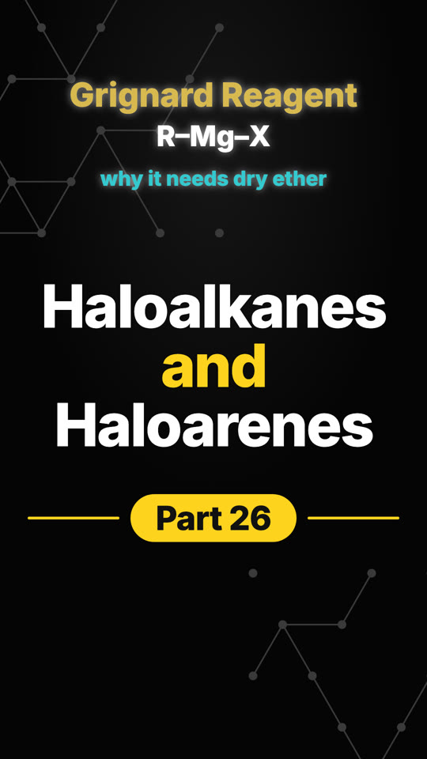
Grignard Reagent: Why It Needs Dry EtherAlkyl halides react with magnesium in dry ether to give alkylmagnesium halides, RMgX: very useful, and destroyed by any trace of water. In this lesson: RX + Mg in dry ether gives RMgX (Victor Grignard, Nobel 1912), magnesium slipping between C and Br, the polar C-Mg bond with a carbanion-like carbon, the curved-arrow mechanism with water (RMgX + H2O → RH + Mg(OH)X), why moisture, alcohols and amines destroy it, and two solved questions.Chemistry Wurtz Reaction: Join Two Alkyl GroupsAlkyl halides react with sodium in dry ether to give alkanes with double the number of carbon atoms. In this lesson: 2RX + 2Na in dry ether gives R-R + 2NaX, bromomethane to ethane, how it works in a simple ionic picture (Na gives electrons, R- attacks a second R-X from the back, beyond NCERT), why two different halides give a mixture of three alkanes, why methane cannot be made, and two solved questions.Chemistry
Wurtz Reaction: Join Two Alkyl GroupsAlkyl halides react with sodium in dry ether to give alkanes with double the number of carbon atoms. In this lesson: 2RX + 2Na in dry ether gives R-R + 2NaX, bromomethane to ethane, how it works in a simple ionic picture (Na gives electrons, R- attacks a second R-X from the back, beyond NCERT), why two different halides give a mixture of three alkanes, why methane cannot be made, and two solved questions.Chemistry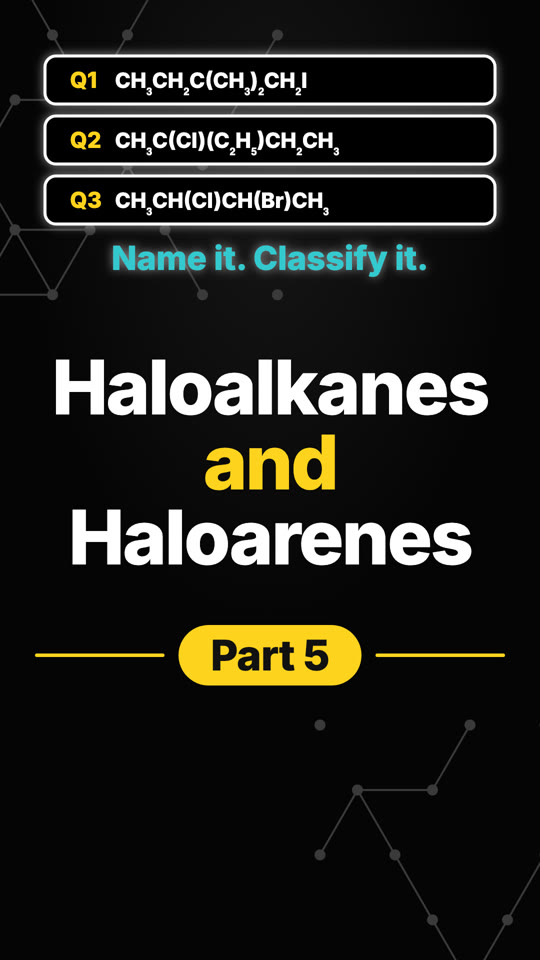
Name and Classify Haloalkanes: NCERT Questions SolvedThree NCERT exercise questions solved with one checklist: longest chain (look inside the branches), lowest locants, alphabetical order on a tie; and the class (1°, 2°, 3°) is decided only by the carbon that carries the halogen. CH₃CH₂C(CH₃)₂CH₂I is 1-iodo-2,2-dimethylbutane (1°), CH₃C(Cl)(C₂H₅)CH₂CH₃ is 3-chloro-3-methylpentane (3°), and CH₃CH(Cl)CH(Br)CH₃ is 2-bromo-3-chlorobutane.Chemistry